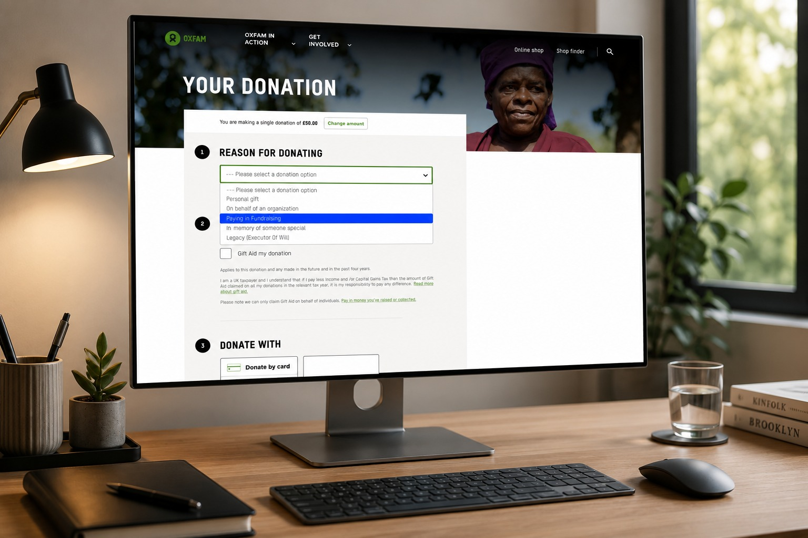
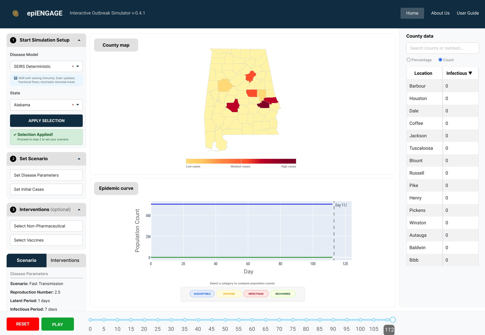
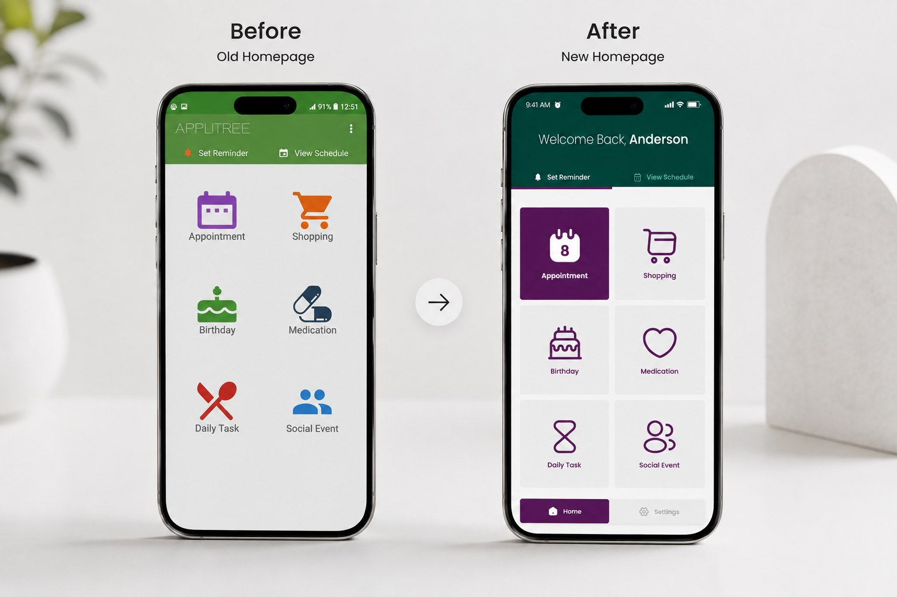
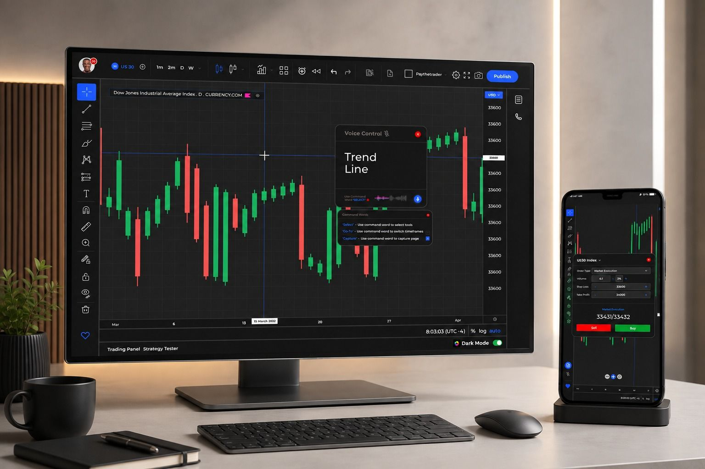

Hi, I'm Hamed, User Experience Researcher & Designer
I  turn complex user research into products people love, and decisions teams trust.
turn complex user research into products people love, and decisions teams trust.
For 7+ years, I've helped organizations transform research into measurable business outcomes by uncovering user needs, improving accessibility, and designing experiences that work for everyone.
Across , , , , , and .

Featured work
Research that shipped, and moved the numbers

Reason for donation section redesign
£1M+ Raised · 18% → 72% completion
Research-led redesign of how Oxfam donors record their reason for giving, and the post-launch investigation that caught a drop in legacy donations.
Read the case study
Interactive Outbreak Simulator usability overhaul
Scientists using the platform: 100+ → 800+
A heuristic evaluation, moderated usability testing, and full redesign of an NSF-backed epidemic modeling platform.
Read the case study
APPLTree accessibility redesign
500+ people with cognitive impairments served
Redesigning a scheduling app used by 500+ people with cognitive impairments, grounded in published academic research.
Read the case study
An inclusive trading platform
5 traders tested · SUS score 74.5
An accessibility redesign of a financial market trading platform for traders with disabilities, benchmarked against TradingView and MetaTrader 4.
Read the case studyHow I work
Discover before assuming. Test before shipping.
1. Discover
Frame the real problem with stakeholders before touching a solution: discovery studies, analytics review, and context-gathering with the teams closest to users.
2. Research
Mixed methods by default: interviews and co-design for the "why," moderated & unmoderated usability testing and A/B experiments for the "how much."
3. Design
Journey maps, flows, and prototypes built to be tested, and built accessible from the first wireframe rather than patched in at the end.
4. Validate
Usability testing and A/B experiments close the loop, and findings get synthesized back into a metric the business already tracks.
Experience
Education
MSc User Experience Design, Birmingham City University (2023)
PhD Candidate, Technology, Purdue University (in progress, expected 2030)
Current focus
Leading UX research across NSF-funded science gateway projects at SGX3 (SGCI), translating complex scientific and computational workflows into accessible tools for researchers worldwide, while pursuing a PhD in Technology at Purdue University.
Leadership
Impact that scales past my own output
Community Lead, Charity UX Network
Leading 190+ professionals across the charity, public and health sectors, curating thought-leadership sessions and spreading accessibility and inclusive design practice across resource-constrained organizations.
Mentorship at scale
Mentored 200+ junior and self-taught designers into industry roles through Mentorled, with evidence-based, research-informed guidance.
Open to UX Research & Product Design roles.
Based in the USA 🇺🇸 and open to remote work or relocation. Happy to talk through any of the work above in detail.